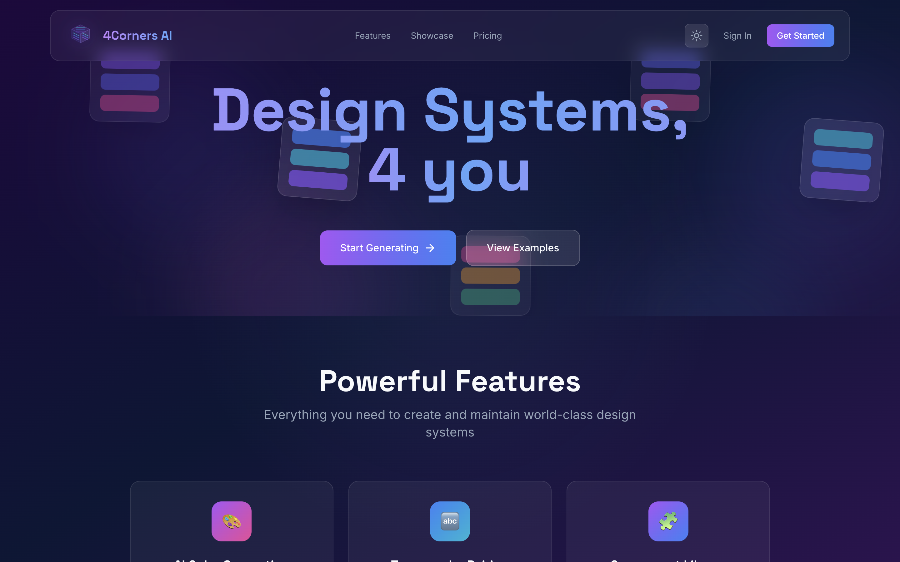

Describe your brand in plain text. Get back a complete, production-ready design system — color palettes with WCAG accessibility scores, typography pairings, component specs — exportable to CSS variables, Tailwind config, Figma tokens, or a full ZIP package. Powered by GPT-4o, Claude, and Gemini 2.5 Flash simultaneously.

1 Month
February 2026
Launched live in production
Solo Developer
Full-stack, AI prompt engineering, UI/UX design, DevOps, Stripe integration
SaaS Platform
Free tier · Basic $9/mo · Pro $29/mo · Stripe subscriptions
GPT-4o, Claude, and Gemini each return slightly different JSON shapes for the same design system prompt. Getting guaranteed-valid, identically-structured output from all three required iterative prompt engineering — every field, type, and nesting level had to be explicitly specified. A repair layer on top detects truncated or malformed responses and patches them before they reach the app, preventing runtime errors even when an AI provider produces incomplete output.
When a user subscribes via Stripe, two webhooks fire almost simultaneously — one from Clerk (new user created) and one from Stripe (subscription activated). The Stripe webhook must look up the user by stripeCustomerId, update their plan and credit balance in Postgres, and stay consistent with Clerk's user record. If the Stripe webhook arrives before the Clerk webhook has finished creating the user row, the lookup fails silently. Solved with retry logic and upsert semantics rather than insert-only writes.
Upstash Redis throws on initialization if the environment variables are missing — which they always are at next build time. Every deployment was failing for this reason until a mock Redis client was added that returns neutral values for all operations. The real limiter activates in production; the mock keeps builds clean. A small fix with a large impact on CI/CD reliability.
Every generated color produces 10 shades (50–900 scale), and every shade needs a WCAG contrast ratio computed against both white and black. With multiple color roles (primary, secondary, accent, semantic, neutral), each generation was recalculating the same hex values repeatedly. Memoizing the contrast calculations by hex string reduced redundant work dramatically — repeated colors across different brand inputs compute in microseconds instead of milliseconds each.
Designers expect Figma tokens (a specific nested JSON schema). Developers expect CSS custom properties. System architects want a Tailwind config with theme.extend.colors keys. The color data in Zustand lives as an array of shade objects ({ value: "500", hex: "#6366f1" }) but all three exporters need a Record<string, string>. A single converter function bridges the two representations, then three independent serializers write each output format. All three are generated from one call, and breaking one doesn't touch the others.
// Lazy-initialize only the providers whose API keys are present const openai = process.env.OPENAI_API_KEY ? new OpenAI({ apiKey: process.env.OPENAI_API_KEY }) : null; const anthropic = process.env.ANTHROPIC_API_KEY ? new Anthropic({ apiKey: process.env.ANTHROPIC_API_KEY }) : null; const genAI = process.env.GOOGLE_AI_API_KEY ? new GoogleGenerativeAI(process.env.GOOGLE_AI_API_KEY) : null; // Unified output interface — same shape regardless of which AI responded export interface GeneratedDesignSystem { colors: { primary: ColorPalette; secondary: ColorPalette; accent: ColorPalette; semantic: { success: ColorPalette; error: ColorPalette; warning: ColorPalette; info: ColorPalette; }; neutral: ColorPalette; }; typography: { fontPairs: FontPairing[]; typeScale: TypeScale; recommendations: string[]; }; metadata: { generatedAt: string; aiProvider: string; tier?: GenerationTier; tokensUsed?: number; brandSummary?: string; creativeSeed?: number; }; }
// Color psychology mapped to industry — not random, deliberate const INDUSTRY_COLORS: Record<string, string> = { finance: "#1E3A8A", // Trust Blue healthcare: "#3B82F6", // Medical Blue eco: "#059669", // Sustainable Green creative: "#7C3AED", // Bold Purple food: "#EA580C", // Fresh Orange technology: "#6366F1", // Tech Indigo education: "#2563EB", // Learning Blue gaming: "#A855F7", // Neon Purple ecommerce: "#EC4899", // Vibrant Pink }; // Memoized — in-memory cache prevents redundant shade recalculation const shadeCache = new Map<string, ColorShades>(); const accessibilityCache = new Map<string, AccessibilityResult>(); // Each color gets 10 shades (50–900) + full WCAG contrast report (vs white + black)
// Production: real Upstash sliding window (5 AI calls per minute per user) export const generateRateLimit = new Ratelimit({ redis, limiter: Ratelimit.slidingWindow(5, '1 m'), analytics: true, prefix: '4corners_generate', }); // Build time: Upstash credentials don't exist → mock keeps next build from throwing redis = { get: async () => null, set: async () => 'OK', incr: async () => 1, expire: async () => 1, eval: async () => null, } as any;
// Zustand stores colors as { value: "500", hex: "#6366f1" }[] // Exporters need Record<string, string> — this bridges the two function convertToColorPalette(storeData: DesignSystemInput): ColorPaletteResponse { if (storeData.colors?.primary?.shades && Array.isArray(storeData.colors.primary.shades)) { const primaryShades: Record<string, string> = {}; storeData.colors.primary.shades.forEach((shade: any) => { primaryShades[shade.value] = shade.hex; // { "500": "#6366f1" } }); // One call → CSS vars, Tailwind config, Figma JSON — all in one ZIP } }
model User { clerkId String @unique plan String @default("free") credits Int @default(10) // Free trial (3 generations) tracked separately from paid credits // User can exhaust trial, upgrade, and paid credits start fresh freeGenerationsUsed Int @default(0) freeGenerationsLimit Int @default(3) // Stripe bindings for subscription management stripeCustomerId String? @unique stripeSubscriptionId String? @unique stripePriceId String? stripeCurrentPeriodEnd DateTime? designSystems DesignSystem[] usageMetrics UsageMetrics[] } model DesignSystem { tier String @default("basic") colors Json? typography Json? components Json? isPublic Boolean @default(false) featured Boolean @default(false) @@index([userId, createdAt(sort: Desc)]) @@index([userId, tier]) }
export default clerkMiddleware(async (auth, req) => { if (isAdminRoute(req)) { const { userId } = await auth(); if (!userId) { const signInUrl = new URL('/sign-in', req.url); signInUrl.searchParams.set('redirect_url', req.url); return NextResponse.redirect(signInUrl); } // Role check (USER vs ADMIN) handled inside the admin layout } if (isPublicRoute(req)) return; if (isProtectedApiRoute(req)) return; // API routes handle their own 401s if (isProtectedRoute(req)) await auth.protect(); }); // Matcher scoped only to routes that need auth — removed ~200ms latency on public pages export const config = { matcher: [ '/dashboard/:path*', '/generate/:path*', '/admin/:path*', '/api/design-systems/:path*', '/api/stripe/create-checkout-session', ], };
"When you give users three AI models to choose from, they don't pick the smartest one — they pick the fastest one. Speed is a feature, not an optimization."— Learned in production. Early builds used GPT-4o everywhere: users waited 8–12 seconds and left. Switching the default to Gemini 2.5 Flash (sub-2s) for standard tier, keeping Claude and GPT-4o for Pro, reduced abandonment dramatically. Perceived quality is inseparable from perceived speed.